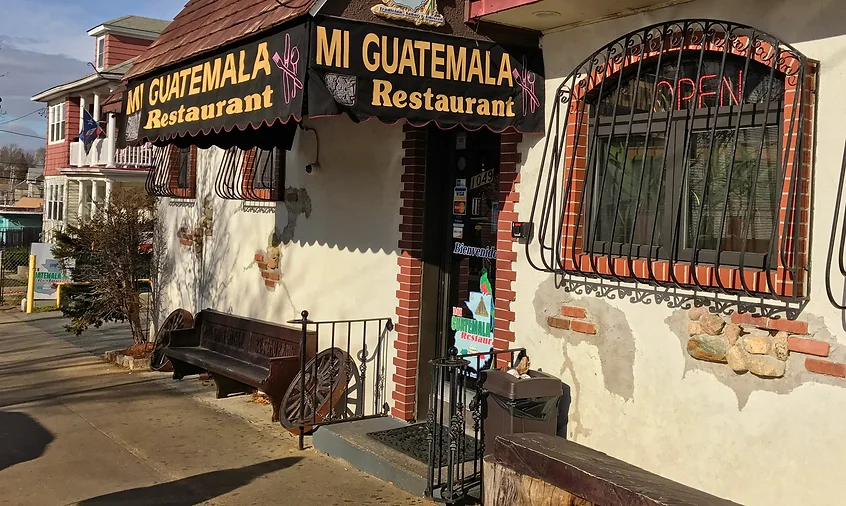
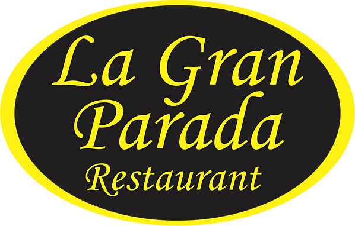

Mi Guatemala
Address:
1049 Atwells Ave, Providence, RI 02909
Discover the flavors of Guatemala nestled in the heart of Providence, RI, at Mi Guatemala. From hearty breakfasts featuring regional specialties like El Chapin and El Ranchero to savory delights such as Chicharrón and Chile Rellenos, every dish is crafted with care and infused with rich, vibrant flavors. Whether you're craving the comforting warmth of Caldo de Res or the satisfying crunch of Garnachas, each bite tells a story of Guatemala's diverse culinary heritage. With its warm ambiance and genuine hospitality, Mi Guatemala promises an unforgettable dining experience for both locals and visitors alike. Come and savor the magic of Guatemala right here in Providence. ¡Buen provecho!

Click here for more Info
La Gran Parada
Address:
937 Broad St, Providence, RI 02905
Nestled in the heart of South Providence, La Gran Parada Restaurant stands as a beacon of authentic Dominican cuisine. Led by owner Manuel Delgado, this establishment boasts a rich legacy of flavor and community. From savory steaks to comforting sancocho and the iconic mofongo, every dish is crafted with care and tradition, using only the freshest ingredients to ensure an unparalleled dining experience. What began as a modest venture in 1985 has blossomed into a beloved culinary institution, thanks to Manuel's unwavering dedication and the support of his cherished community. Through hard work, perseverance, and a commitment to innovation, La Gran Parada has evolved into a thriving hub of Dominican culture, where every meal tells a story of resilience and culinary excellence.

Click here for more info
Den Den Korean Fried Chicken
Address:
182 Angell St, Providence, RI, 02906
Welcome to Den Den Korean Fried Chicken, located in the lively city of Providence. Den Den offers a tantalizing array of Korean-inspired dishes, with a focus on their signature crispy chicken wings and drums paired perfectly with Korean pickled radish. Each dish is crafted to deliver a burst of authentic Korean flavors, from the comforting warmth of their Den Den Spicy Rice Cake to the fiery kick of their Korean Ramen. With a commitment to quality and taste, Den Den Korean Fried Chicken invites diners to embark on a culinary journey through the vibrant and dynamic flavors of Korea, right here in Providence.

Click here for more info